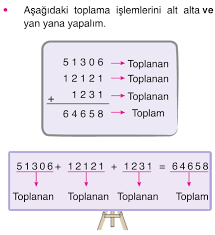
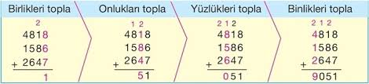
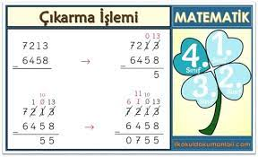
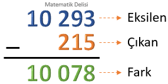
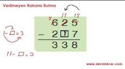
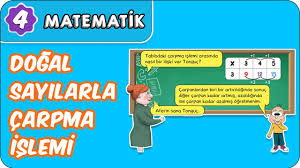
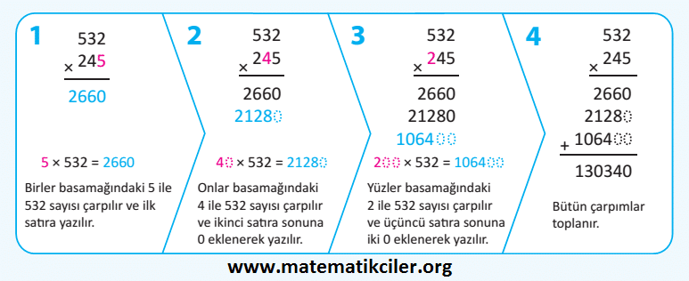
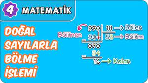
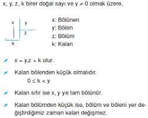
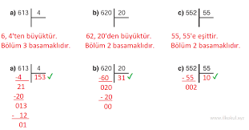

DOĞAL SAYILAR
Doğal sayılar sıfırdan başlayarak sonsuza kadar devam eden sayılar kümesidir. Sayma sayılarına 0 (sıfır) sayısını katarsak doğal sayılar oluşur. Negatif değer almazlar. Bazı kaynaklarda "0" doğal sayı olarak alınmaz. Matematikte hâlâ sıfırın bir doğal sayı olarak alınıp alınmayacağı tartışma konusu olup cebirsel inşalar yapılmak isteniyorsa "0" sayısının doğal sayı olarak alınması avantaj sağlayabilir.
Matematiğin diğer dallarında da problem hangi durumda daha kolay ifade edilebilecekse doğal sayılar kümesi de o şekilde alınır.
Bir doğal sayının rakamlarının belirttiği değere rakamların sayı değeri denir. Doğal sayının rakamlarının toplamına rakamların sayı değerleri toplamı denir.
Sayma sayıları kümesine {1,2,3,…} sıfırı da katarsak doğal sayılar oluşur. Doğal sayılar 'N' harfi ile gösterilir:
N={0,1,2,3,…10,…100,…}
DOĞAL SAYILARDA İŞLEMLER:
| Toplama İşlemi
|
Çıkarma İşlemi
|
Çarpma İşlemi
|
Bölme İşlemi
|

DOĞAL SAYILARDA TOPLAMA İŞLEMİ
Doğal sayıları birbiriyle toplayarak toplama işlemi yaparız.
Böylece elimizde bulunan toplam sayıyı elde etmiş oluruz. Tabii bunu farklı şekillerde yapabiliriz ve eninde sonunda rakamları birbiri ile toplayarak toplam işlemi elde edebiliriz.


Toplama işleminin yapılabilmesi için değerlerin aynı olması gerekiyor. Yani 5 tane cevizle, 4 tane kirazı toplayamazsınız. Bunun yanında toplama işlemini yapabilmeniz için her bir basamağı kendi eş basamağıyla yapmalısınız. Basamakları kaydırıp, onlar basamağıyla yüzler basamağını bir tutamazsınız.
TOPLAMA İŞLEMİNİN ÇEŞİTLERİ:
Toplama işlemi eldesiz ve eldeli şekilde yapılıyor
Eldesiz demek, iki basamağın toplamının on ve üzeri olmamasıdır.
Eldeli demek de iki basamağın toplamının on ve üzeri olmasıdır.
Eldeli işlemlerde onluk basamağı bir üst basamağa ekliyorsunuz.
Toplama işlemine birler basamağından, yani en sağ taraftan başlanır.
Basamak sayısına göre sola doğru devam ediyorsunuz.
Bunu bir örnekle gösterecek olursak;
4078 Toplama işlemine önce en sağdan birler basamağından başlıyorsunuz.
8+1=9 +3721 bulduğunuz rakamı yine birler basamağının altına yazıyorsunuz.
Daha sonra onlar 7799 basamağına geçiyornuz.
7+2=9 bulduğunuz rakamı da onlar basamağın altına yazıyorsunuz.
Sonra yüzler basamağına geçiyorsunuz.
0+7=7 bulduğunuz rakamı da yüzler basamağının altına yazıyorsunuz.
En son olarak da binler basamağına geçiyorsunuz.
4+3=7 bulduğunuz rakamı da binler basamağının altına yazarak, işlemi sonlandırıyorsunuz.

DOĞAL SAYILARDA ÇIKARMA İŞLEMİ

Doğal sayılarla çıkarma işlemi sırasında önce birler basamağından başlarız ve çıkarma işlemini gerçekleştiririz.
Daha sonra onlar basamağına geçeriz ve çıkarma işlemini tamamlarız. Ardından ise sırasıyla yüzler basamağı ve sonra da binler basamağını çıkartırız.

1) Doğal sayılarda çıkarma işlemi yapılırken aynı adlı basamaklar alt alta gelecek şekilde sayılar yazılır.
4564 ile 325’i çıkartmak istersek aynı basamakların alt alta gelmesine dikkat etmeliyiz.
2) Daha sonra işlemler en sağdaki basamaktan (birler basamağından) sola doğru sırayla yapılır.
3) Bir basamakta yapılan işlemde eksilen sayıdaki rakam çıkan sayıdaki rakamdan küçükse soldaki basamaktan bir onluk alınır.
ÇIKARMA İŞLEMİNDE VERİLMEYEN SAYIYI BULMA:
Yapacağımız bu çıkarma işlemi ile beraber verilmemiş olan toplananı bulmuş oluruz. Kısacası verilmemiş olan toplananı bulmak için toplamdan diğer toplananı çıkarırız.

DOĞAL SAYILARDA ÇARPMA

Çarpma işlemi çarpanlardan ve çarpımdan oluşur.
Birbiriyle çarpılan sayılara ''çarpan'', elde edilen sonuca ise ''çarpım'' denir. Toplama işleminde olduğu gibi çarpma işleminde de sayıların yer değiştirmesi sonucu etkilemez.
Örneğin: (3 × 7 = 21) ve (7× 3 = 21).
1- Çarpma işleminde sayılar çarpılarak toplanır.
Bazı problemlerde sonuca daha kısa sürede ulaşmak için toplama işlemi yerine çarpma işlemi yapılabilir.
2- Çarpma işleminde ''×'' yerine ''.'' işareti de kullanılabilir.
Örnekler:
2 × 2 = 4 yerine 2 . 2 = 4
3 × 4 = 12 yerine 3 . 4 = 12
7 × 7 = 49 yerine 7 . 7 = 49
3- ''0'' sayma sayısı değil doğal sayıdır.
Toplama işleminde etkisiz eleman olan ''0'', çarpma işleminde ''yutan eleman'' olur.
3 × 0 = 0
12 × 0 = 0
123 × 0 = 0
Not: İkiden fazla çarpana sahip çarpma işlemlerinde çarpanlardan biri ''0'' ise sonuç yine ''0'' olur.
Örnekler:
3 × 21 × 0 = 0
7 × 0 × 14 = 0
111 × 110 × 0 = 0
4- Çarpma işleminde çarpanların yerinin değiştirilmesi sonucu etkilemez.
Örnekler:
4 × 1 = 4 ya da 1 × 4 = 4
5 × 4 = 20 ya da 4 × 5 = 20
7 × 3 = 21 ya da 3 × 7 = 21
6 × 9 = 54 ya da 9 × 6 = 54
Not: 3 çarpandan oluşan çarpma işlemlerinde de çarpanların yeri sonucu etkilemez.
Örnekler:
4 × 3 × 6 =
Bu işlemde önce 4 ile 3 çarpılır.
4 × 3 = 12
12 × 6 = 72
Çarpanların yeri değişseydi sonuç yine aynı çıkacaktı..
3 × 6 × 4 =
3 × 6 = 18
18 × 4 = 72
5- Çarpım işleminde çarpanlardan biri 10 ise diğer çarpanın sonuna ''0'' eklenerek sonuca hızlı bir şekilde ulaşılabilir.
Örnekler:
2 × 10 = 20
6 × 10 = 60
11 × 10 = 110

DOĞAL SAYILARDA BÖLME İŞLEMİ

Doğal sayılarda bölme işlemi yapmak için öncelikle bölme işleminin taraflarını öğrenmek gerekir. Bir bölme işleminde 4 ayrı kısım bulunur. Bunlar;
- bölünen,
- bölen,
- bölüm ve
- kalan şeklindedir.

Konuyla alakalı bir örnek vermek gerekirse;
Örnek 1:
Gizem, 65 cevizi 4 çocuğa eşit bir şekilde paylaştıracaktır. Bu paylaştırma işleminde her çocuğa toplamda kaç ceviz düşmektedir? Ceviz paylaşımından sonra ise geriye kaç ceviz kalmaktadır?
Çözüm:
Gizem'in toplamda 65 cevizi vardır. 4 çocuğa bu cevizler pay edilecekse, 65'i 4'e bölmeliyiz.
65 / 4 = 16 olur. Yani 4 çocuğa 16 tane ceviz düşmektedir. Kalan ise 1'dir. Geriye 1 adet cevzi kalmaktadır. Bu işleme göre;
- 65 = bölünen
- 4 = bölen
- 16 = bölüm
- 1 ise = kalan olur.
Size verilen sayılara göre bölüm kısmının basamak sayısını da kolaylıkla bulabilirsiniz. Üç basamaklı bir sayıyı bir basamaklı bir sayıya bölerken bölüm kısmının basamak sayısını bölme işlemi yapmadan da bulabilirsiniz. Bu işlem için öncelikle bölünen kısmının yüzler basamağındaki sayıyı bölen sayı ile karşılaştırmak gerekir.
Bölünen kısmın yüzler basamağındaki sayı eğer ki bölenden küçük olursa bölüm kısmı da iki basamaklı bir sayı olur.
Eğer bölünen kısmın yüzler basamağındaki sayı bölen sayıdan büyük ya da eşitse bölüm kısmı üç basamaklı bir sayı olur.
Konuyla alakalı bir örnek vermek gerekirse;
Örnek 2:
702 / 5, 563 / 5, 634 / 8 işlemlerini bölme işlemi yapmadan bölüm kısmının basamak sayısını bulunuz.
Çözüm:
Bölünen ve bölen kısmını karşılaştırarak, bölüm kısmının basamak sayısını kolaylıkla bulabilirsiniz.
702 / 5 bölme işleminde 7>5 olduğu için bölüm kısmı üç basamaklı bir sayı olur.
563 / 5 bölme işleminde 5=5 olduğu için bölüm kısmı üç basamaklı bir sayı olur.
634 / 8 bölme işleminde 6
Bu işlemlerin kolaylıkla yapılması için bölünen kısmın ilk sayısı yani yüzler basamağı ile bölen sayıyı karşılaştırmak yeterli olacaktır.

Üç basamaklı bir sayı ile iki basamaklı bir sayı bölünmek istenirse bölüm kısmının basamak sayısını belirlemek için bölünen kısmın yüzler ve onlar basamağındaki sayı alınır ve bu sayı bölen kısımdaki iki basamaklı sayı ile karşılaştırılır.
Eğer bölünen kısmın yüzler ve onlar basamağındaki sayı bölen sayıdan küçük olursa bölüm kısmının basamak sayısı bir basamak olur. Ama eğer ki bölünen kısmın yüzler ve onlar basamağındaki sayı bölen sayıya göre eşit ya da büyükse bölüm kısmındaki sayı iki basamaklı olur.
Örnek 3:
617 / 14, 617 / 61, 617 / 74 işlemlerini bölme işlemi yapmadan bölüm kısmının basamak sayısını bulunuz.
Çözüm:
617/14 bölme işleminde 61 > 14 olduğu için bölüm kısmı 2 basamaklıdır.
617/61 bölme işleminde 61=61 olduğu için bölüm kısmı 2 basamaklıdır.
617/74 bölme işleminde 61
Bölme işleminde sağlama yani doğrulama yapmak da önemlidir. Bu işlem için bölen ile bölüm çarpılmalı daha sonra da çarpıma kalan kısım eklenmelidir. Bu işlem sonucunda bölünen kısım bulunur.
Örnek 4: Bölen: 15
Bölüm: 44
Kalan 14 ise bölüneni bulunuz.
(Bölen x bölüm) + kalan = bölünen
15 x 44 = 660 + 14 = 674 Yani bölünen 674 olur.
SINAV SORULARI İÇİN LİNKE TIKLAYINIZ...
SINAV LİNKİ